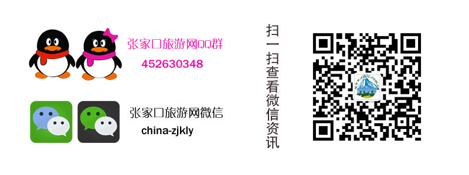

上海接团后乘车游览上海南浦大桥、浦东新区，陆家嘴金融贸易区；登上海标志性建筑——金茂大厦（88层），外观世界第三高塔——东方明珠电视台外景。欣赏黄浦江两岸迷人风光，西岸上海的象征之一“万国建筑博览群”，上海最具“海派特色”的外滩，陈毅塑像。游览中华第一商业街——南京路步行街。结束后车回杭州途中路经中国四大名菊之首的杭白菊产地桐乡，品杭白菊，结束后车回杭州，晚餐后入住酒店。
宿：杭州[中、晚]早餐后酒店大堂集合，前往西子湖畔，船游西湖（不上岛），远观雷峰塔、断桥、孤山等景点。游览抗金民族英雄岳飞的岳庙。中餐后游览杭州最著名的飞来峰景区（不含灵隐寺门票及香花券）；是我国南方古代古窟艺术重要地区之一，游览青林洞、玉乳洞、龙泓洞等景点。游览西湖新十景“龙井问茶”，一览茶乡风情一条街的古韵，品茗绿茶皇后西湖龙井的纯正茶味。参观杭州的西湖丝绸文化博物馆。游览杭州最佳主题公园—黄龙洞。晚餐后可自费参观游览杭州的宋城景区，怪街，鬼屋等景点，欣赏世界三大名秀之一的宋城千古情表演（300元）。
宿：杭州[早、中、晚]早餐后7点车赴千岛湖，抵达游船码头后，根据当天船期游游览中心湖区，梅峰观群岛、渔乐岛或龙山岛等景区，下午4点左右上岸乘车前往黄山景区，入住酒店。
宿：黄山汤口[早、中、晚]早餐后乘车赴 “五岳归来不看山，黄山归来不看岳”世界自然、文化双遗产游览黄山自然景区：{缆车或步行上山（下山索道费用自理）}，游莲花峰、梦笔生花、猴子观海、游迎客松、光明顶、玉屏楼、一线天、百步云梯等黄山名景区，步行下山。
宿：黄山汤口[早、中、晚]早餐后车赴南京，游览中山陵景区，是中国近代伟大的政治家孙中山先生的陵墓，之后游览总统府：是朱元璋时期的汉王府、康熙时期的江宁织造署、乾隆时期的行宫、“太平天国”时期的天王府、孙中山时期的临时大总统府等等， 行程结束后适时送团。
[早、中]1、全程空调旅游车（一人一座）。
2、住宿；快捷型商务酒店住宿，（两人一间）。
3、餐费；（4早9正，十人一桌9菜一汤）
4、景点；景点首道门票。
5、导游服务费。
6、保险人身意外伤害险。行程结束后适时送团。
黄山下山索道返程90元/人及最后一天晚餐、住宿！
1、团队住宿需身份证登记且按房间分房，故有可能出现拼房现象，如拼房或三人间不成功，房差由客人自理。
2、每个城市之间大巴运行时间较长，因此各位可以利用这段时间休息，以便于下个城市的游览，特别是旅游旺季很可能会堵车，希望游客予以理解。由于人力不可抗拒因素造成行程延误或更改行程路线所产生的费用由客人自理。
3、旅游过程中的用餐只能以吃饱为主，希望游客予以理解。
支付宝转账，支付宝账号：295879185@qq.com
注：报名后，会有客服人员向您咨询。转账成功后，会给您微信通知消息。请关注我们的公众号：china-zjkly （一切解释详见微信通知）
